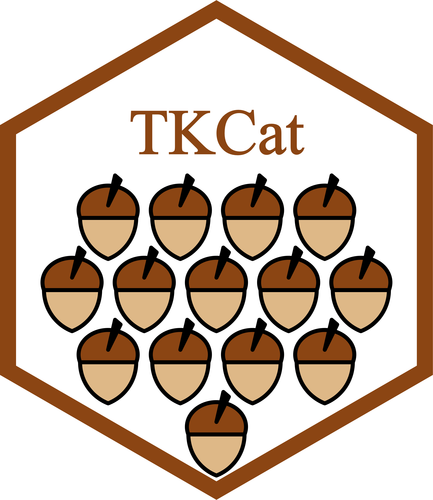

The aim of TKCat (Tailored Knowledge Catalog) is to facilitate the management of data from knowledge resources that are frequently used alone or together in research environments. In TKCat, knowledge resources are manipulated as modeled database (MDB) objects. These objects provide access to the data tables along with a general description of the resource and a detail data model generated with ReDaMoR documenting the tables, their fields and their relationships. These MDB are then gathered in catalogs that can be easily explored an shared. TKCat provides tools to easily subset, filter and combine MDBs and create new catalogs suited for specific needs.
The TKCat R package is licensed under GPL-3.
Some MDBs refer to the same concepts and could be merged accordingly. However they often use different vocabularies or scopes. Collections are a used to identify such concepts and to define a way to document formally the scope used by the different members of these collections. Thanks to this formal description, tools can be used to automatically combine MDBs refering to the same collection but using different scopes.
This vignette describes how to create TKCat Collections, document collection members and create functions to support the merging of MDBs. The advantages and uses of Collections are presented in the general user guide.
A collection is defined by a JSON document. This document should fulfill the requirements defined by the Collection-Schema.json. Two collection are available by default in the TKCat package.
list_local_collections()## # A tibble: 2 × 2
## title description
## <chr> <chr>
## 1 BE Collection of biological entity (BE) concepts
## 2 Condition Collection of condition conceptsHere is how the BE collection is defined.
get_local_collection("BE") %>%
paste('```json', ., '```', sep="\n") %>% cat(){
"$schema": "https://json-schema.org/draft/2019-09/schema",
"$id":"TKCat_BE_collection_1.0",
"title": "BE collection",
"type": "object",
"description": "Collection of biological entity (BE) concepts",
"properties": {
"$schema": {"enum": ["TKCat_BE_collection_1.0"]},
"$id": {"type": "string"},
"collection": {"enum":["BE"]},
"resource": {"type": "string"},
"tables": {
"type": "array",
"minItems": 1,
"items":{
"type": "object",
"properties":{
"name": {"type": "string"},
"fields": {
"type": "object",
"properties": {
"be": {
"type": "object",
"properties": {
"static": {"type": "boolean"},
"value": {"type": "string"}
},
"required": ["static", "value"],
"additionalProperties": false
},
"source": {
"type": "object",
"properties": {
"static": {"type": "boolean"},
"value": {"type": "string"}
},
"required": ["static", "value"],
"additionalProperties": false
},
"organism": {
"type": "object",
"properties": {
"static": {"type": "boolean"},
"value": {"type": "string"},
"type": {"enum": ["Scientific name", "NCBI taxon identifier"]}
},
"required": ["static", "value", "type"],
"additionalProperties": false
},
"identifier": {
"type": "object",
"properties": {
"static": {"type": "boolean"},
"value": {"type": "string"}
},
"required": ["static", "value"],
"additionalProperties": false
}
},
"required": ["be", "source", "identifier"],
"additionalProperties": false
}
},
"required": ["name", "fields"],
"additionalProperties": false
}
}
},
"required": ["$schema", "$id", "collection", "resource", "tables"],
"additionalProperties": false
}A collection should refer to the "TKCat_collections_1.0" $schema. It should then have the following properties:
$id: the identifier of the collection
title: the title of the collection
type: always object
description: a short description of the collection
properties: the properties that should be provided by collection members. In this case:
$schema: should be the $id of the collection
$id: the identifier of the collection member: a string
collection: should be “BE”
resource: the name of the resource having collection members: a string
tables: an array of tables corresponding to collection members. Each item being a table with the following features:
name: the name of the table
fields: the required fields
"Scientific name" or "NCBI taxon identifier".Identifying collection members of an MDB can be done by providing a table as shown in the general user guide or by writing a JSON file like the following one which correspond to BE members of the CHEMBL MDB.
system.file(
"examples/CHEMBL/model/Collections/BE-CHEMBL_BE_1.0.json",
package="TKCat"
) %>%
readLines() %>% paste(collapse="\n"){
"$schema": "TKCat_BE_collection_1.0",
"$id": "CHEMBL_BE_1.0",
"collection": "BE",
"resource": "CHEMBL",
"tables": [
{
"name": "CHEMBL_component_sequence",
"fields": {
"be": {
"static": true,
"value": "Peptide"
},
"identifier": {
"static": false,
"value": "accession"
},
"source": {
"static": false,
"value": "db_source"
},
"organism": {
"static": false,
"value": "organism",
"type": "Scientific name"
}
}
}
]
}The identification of collection members should fulfill the requirements defined by the collection JSON document, and therefore pass the following validation.
jsonvalidate::json_validate(
json=system.file(
"examples/CHEMBL/model/Collections/BE-CHEMBL_BE_1.0.json",
package="TKCat"
),
schema=get_local_collection("BE"),
engine="ajv"
)## [1] TRUEThis validation is done automatically when reading a fileMDB object or when setting collection members with the collection_members() function.
The merge.MDB() and the map_collection_members() functions rely on functions to map members of the same collection. When recorded (using the import_collection_mapper() function), these function can be automatically identified by TKCat, otherwise or according to user needs, these functions could be provided using the funs (for merge.MDB()) or the fun (for map_collection_members()) parameters. Two mappers are pre-recorded in TKCat, one for the BE collection and one for the Condition collection. They can be retrieved with the get_collection_mapper() function.
get_collection_mapper("BE")function (x, y, orthologs = FALSE, restricted = FALSE, ...)
{
if (!requireNamespace("BED")) {
stop("The BED package is required")
}
if (!BED::checkBedConn()) {
stop("You need to connect to a BED database using", " the BED::connectToBed() function")
}
if (!"organism" %in% colnames(x)) {
d <- x
scopes <- dplyr::distinct(d, be, source)
nd <- c()
for (i in 1:nrow(scopes)) {
be <- scopes$be[i]
source <- scopes$source[i]
toadd <- d %>% dplyr::filter(be == be, source ==
source)
organism <- BED::guessIdScope(toadd$identifier, be = be,
source = source, tcLim = Inf) %>% attr("details") %>%
filter(be == !!be & source == !!source) %>% pull(organism) %>%
unique()
toadd <- merge(toadd, tibble(organism = organism))
nd <- bind_rows(nd, toadd)
}
x <- nd %>% mutate(organism_type = "Scientific name")
}
if (!"organism" %in% colnames(y)) {
d <- y
scopes <- dplyr::distinct(d, be, source)
nd <- c()
for (i in 1:nrow(scopes)) {
be <- scopes$be[i]
source <- scopes$source[i]
toadd <- d %>% dplyr::filter(be == be, source ==
source)
organism <- BED::guessIdScope(toadd$identifier, be = be,
source = source, tcLim = Inf) %>% attr("details") %>%
filter(be == !!be & source == !!source) %>% pull(organism) %>%
unique()
toadd <- merge(toadd, tibble(organism = organism))
nd <- bind_rows(nd, toadd)
}
y <- nd %>% mutate(organism_type = "Scientific name")
}
xscopes <- dplyr::distinct(x, be, source, organism, organism_type)
yscopes <- dplyr::distinct(y, be, source, organism, organism_type)
toRet <- NULL
for (i in 1:nrow(xscopes)) {
xscope <- xscopes[i, ]
if (any(apply(xscope, 2, is.na))) {
(next)()
}
xi <- dplyr::right_join(x, xscope, by = c("be", "source",
"organism", "organism_type"))
xorg <- ifelse(xscope$organism_type == "NCBI taxon identifier",
BED::getOrgNames(xscope$organism) %>% dplyr::filter(nameClass ==
"scientific name") %>% dplyr::pull(name), xscope$organism)
for (j in 1:nrow(yscopes)) {
yscope <- yscopes[j, ]
if (any(apply(yscope, 2, is.na))) {
(next)()
}
yi <- dplyr::right_join(y, yscope, by = c("be", "source",
"organism", "organism_type"))
yorg <- ifelse(yscope$organism_type == "NCBI taxon identifier",
BED::getOrgNames(yscope$organism) %>% dplyr::filter(nameClass ==
"scientific name") %>% dplyr::pull(name), yscope$organism)
if (xorg == yorg || orthologs) {
xy <- BED::convBeIds(ids = xi$identifier, from = xscope$be,
from.source = xscope$source, from.org = xorg,
to = yscope$be, to.source = yscope$source,
to.org = yorg, restricted = restricted) %>%
dplyr::as_tibble() %>% dplyr::select(from,
to)
if (restricted) {
xy <- dplyr::bind_rows(xy, BED::convBeIds(ids = yi$identifier,
from = yscope$be, from.source = yscope$source,
from.org = yorg, to = xscope$be, to.source = xscope$source,
to.org = xorg, restricted = restricted) %>%
dplyr::as_tibble() %>% dplyr::select(to = from,
from = to))
}
xy <- xy %>% dplyr::rename(identifier_x = "from",
identifier_y = "to") %>% dplyr::mutate(be_x = xscope$be,
source_x = xscope$source, organism_x = xscope$organism,
be_y = yscope$be, source_y = yscope$source,
organism_y = yscope$organism)
toRet <- dplyr::bind_rows(toRet, xy)
}
}
}
toRet <- dplyr::distinct(toRet)
return(toRet)
}A mapper function must have at least an x and a y parameters. Each of them should be a data.frame with all the field values corresponding to the fields defined in the collection. Additional parameters can be defined and will be forwarded using .... This function should return a data frame with all the fields values followed by “_x” and “_y” suffix accordingly.
This work was entirely supported by UCB Pharma (Early Solutions department).